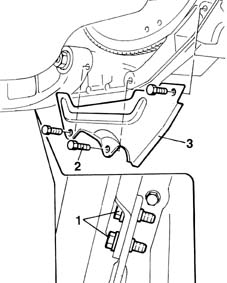
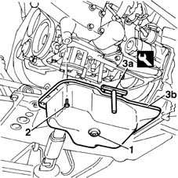
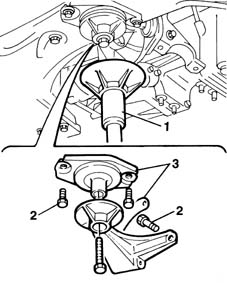
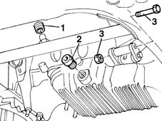
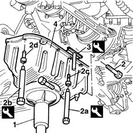

1020A20 crank case oil sump - r + r clean seals for sealant application
- Path
- Procedures > 10 ENGINE UNIT > 1020 CRANKCASE SUMP AND COVERS > 1020A crank case oil sump > 1020A20 crank case oil sump - r + r clean seals for sealant application
- Kind
- repair procedure (removal / refitting; the operation number is the code)
- Applies to
- all engines; all production periods
- Interactive page
- https://sloeber94.github.io/elrnDB-fMltpl/en/#/2891200
Applies to: engines: 1.6 16v; all production periods
 Removing
Removing
 Refitting
RefittingWith the ignition key in the OFF position, disconnect the battery negative terminal.
Place the car on a ramp.
Raise the car.
1. Undo the bolts securing the power unit brackets.
2. Unscrew the bolts securing the flywheel guard.
3. Remove the engine flywheel guard.

Applies to: engines: 1.6 16v; all production periods
Place a container under the vehicle to collect the engine oil.
1. Undo the engine oil drain plug on the sump and drain the oil into the container.
2. After removing the oil container, undo the bolts fixing the crankcase sump.
3. Use tool (3a) to cut through the layer of sealant around the outside, then remove oil sump (3b).
 | Name | Country |
|---|---|---|
3a | Blade | 1.870.718.000 |

Applies to: engines: 1.6 16v; all production periods
Refitting
RemovingClean the crankcase and oil sump contact surfaces to remove traces of silicone sealant.
Apply silicone sealant around the edge of the crankcase sump.
Fit the oil sump to the crankcase.
Tighten the oil sump fixing bolts to torque.
 | Fastening | Component | Ø | Value (daNm) |
|---|---|---|---|---|
- | Bolt | OIL SUMP | M6 | 0.9 |
Clean the oil cap and tighten. Replace the seal.
Tighten the sump oil cap to torque.
| Fastening | Component | Ø | Value (daNm) |
|---|---|---|---|---|
- | Plug | ENGINE OIL DRAIN PLUG | M22 | 5 |
Fit the flywheel guard and tighten the retaining bolts.
Tighten the engine reinforcement bracket fixing bolts to torque.
| Fastening | Component | Ø | Value (daNm) |
|---|---|---|---|---|
- | Bolt | STIFFENING REINFORCEMENT | M10 | Crankcase end 5 |
Lower the lift.
Refill the engine lubrication circuit using the recommended oil.
1084A10 ENGINE OIL - Check level and top up, if necessary
Remove the vehicle from the lift.
With the ignition key in stop position, connect the battery negative terminal.
Applies to: engines: 1.9 JTD 8V; all production periods
Removing
Refitting1016A10 sound-proofing cover - r + r
1084A16 oil dip stick pipe - r r
1076B50 exhaust pipe attachment to engine - r + r
1. Position a hydraulic jack beneath the engine mount.
2. Undo the retaining bolts.
3. Remove the rear engine mount together with the flexible block.

Applies to: engines: 1.9 JTD 8V; all production periods
1. Disconnect the condensed oil return pipe from the oil vapour separator from the crankcase sump.
2. Unscrew the drain plug and collect the oil in a suitable container.
Close the oil plug.
3. Undo the bolt connecting the oil sump to the intermediate shaft support.

Applies to: engines: 1.9 JTD 8V; all production periods
Position a column jack beneath the engine oil sump.
1. Unscrew the bolts securing the oil sump to the gearbox - differential unit.
2. Use tools (2a) and (2b) to unscrew front and rear bolts (2c) and side bolts (2d) securing the sump to the crankcase.
| Name | Country |
|---|---|---|
2a | Key | 1.860.833.000 |
| Name | Country |
|---|---|---|
2b | Key | 1.860.834.000 |
3. Use a blade to cut the sealant around the perimeter of the oil sump.
| Name | Country |
|---|---|---|
3 | Blade | 1.870.817.000 |
Lower the hydraulic jack while supporting the oil sump.
4. Remove the engine oil sump.

Applies to: engines: 1.9 JTD 8V; all production periods
Refitting
RemovingClean the oil sump and engine crankcase surfaces carefully to remove all remaining sealant.
Apply silicone sealant around the perimeter of the engine oil sump.
Fit the engine oil sump.
Use a hydraulic jack to hold the oil sump in contact with the crankcase.
Use the same tool used for dismantling to tighten the bolts securing the engine oil sump to the crankcase to torque.
| Name | Country |
|---|---|---|
- | Key | 1.860.833.000 |
| Name | Country |
|---|---|---|
- | Key | 1.860.834.000 |
| Fastening | Component | Ø | Value (daNm) |
|---|---|---|---|---|
- | Bolt | OIL SUMP | M6 | 0.9 |
| Fastening | Component | Ø | Value (daNm) |
|---|---|---|---|---|
- | Bolt | OIL SUMP | M8 | 2.5 |
Remove the hydraulic jack.
Connect the condensation oil return pipe from the oil vapour separator to the crankcase sump.
Fit the rear engine mount together with the flexible block and tighten the retaining bolts to torque.
| Fastening | Component | Ø | Value (daNm) |
|---|---|---|---|---|
- | Bolt | INTERM RUBBER MOUNT | M8 | 3.5 |
1076B50 exhaust pipe attachment to engine - r + r
Topics linked from this page (4)
- 1016A10 sound-proofing cover - r + r
- 1076B50 exhaust pipe attachment to engine - r + r
- 1084A10 ENGINE OIL - Check level and top up, if necessary
- 1084A16 oil dip stick pipe - r r
Topics that link to this page (11)
- X12 ENGINE OIL LEAKS
- 1020D10 front crank shaft oil seal cover - r + r and replace seals with timing belt removed
- 1020D12 front crank shaft oil seal cover - r + r and replace seals
- 1020D26 flywheel side oil seal cover - r+r
- 1020D30 oil seal cover, fly wheel side - r + r and replace seals
- 1028H10 connecting rod and piston set - r r
- 1028H11 piston connecting rod set - r r
- 1028H12 set of pistons with connecting rods - r r with cylinder head/s removed
- 1028H20 piston with connecting rod - r r
- 1084B12 engine oil pump - r+r
- 1084B28 engine oil intake pump - r + r with crankcase sump removed